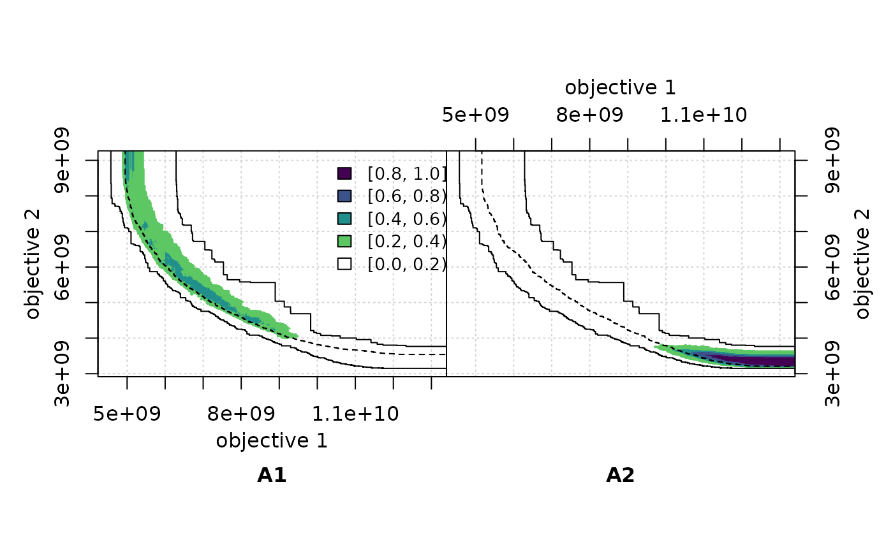
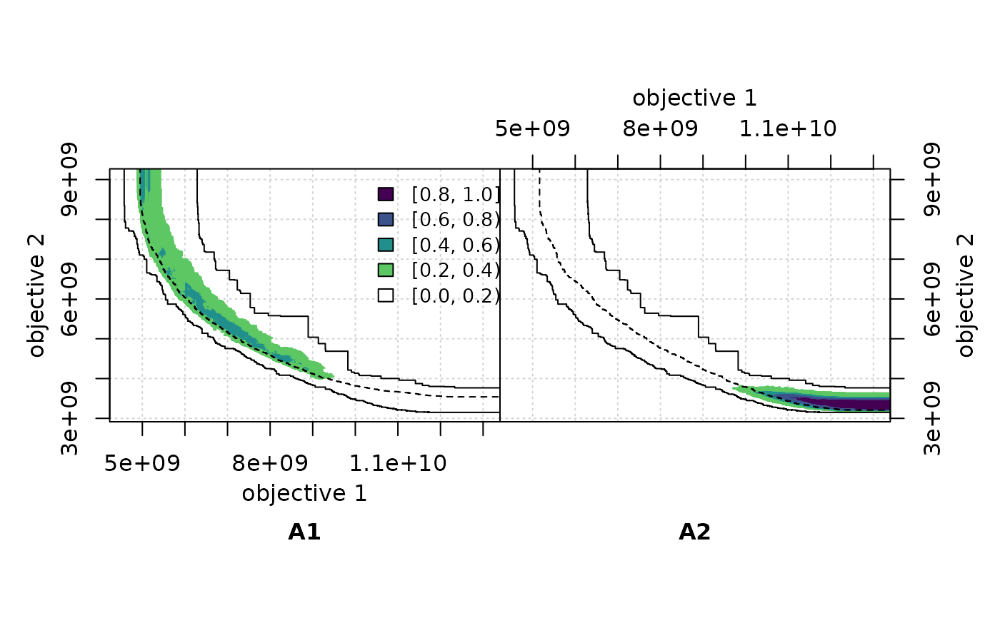

Plot the differences between the empirical attainment functions (EAFs) of two data sets as a two-panel plot, where the left side shows the values of the left EAF minus the right EAF and the right side shows the differences in the other direction.
Usage
eafdiffplot(
data.left,
data.right,
col = c("#FFFFFF", "#808080", "#000000"),
intervals = 5,
percentiles = c(50),
full.eaf = FALSE,
type = "area",
legend.pos = if (full.eaf) "bottomleft" else "topright",
title.left = deparse(substitute(data.left)),
title.right = deparse(substitute(data.right)),
xlim = NULL,
ylim = NULL,
cex = par("cex"),
cex.lab = par("cex.lab"),
cex.axis = par("cex.axis"),
maximise = c(FALSE, FALSE),
grand.lines = TRUE,
sci.notation = FALSE,
left.panel.last = NULL,
right.panel.last = NULL,
...
)Arguments
- data.left, data.right
Data frames corresponding to the input data of left and right sides, respectively. Each data frame has at least three columns, the third one being the set of each point. See also
read_datasets().- col
A character vector of three colors for the magnitude of the differences of 0, 0.5, and 1. Intermediate colors are computed automatically given the value of
intervals. Alternatively, a function such asviridisLite::viridis()that generates a colormap given an integer argument.- intervals
(
integer(1)|character())
The absolute range of the differences \([0, 1]\) is partitioned into the number of intervals provided. If an integer is provided, then labels for each interval are computed automatically. If a character vector is provided, its length is taken as the number of intervals.- percentiles
The percentiles of the EAF of each side that will be plotted as attainment surfaces.
NAdoes not plot any. Seeeafplot().- full.eaf
Whether to plot the EAF of each side instead of the differences between the EAFs.
- type
Whether the EAF differences are plotted as points (points) or whether to color the areas that have at least a certain value (area).
- legend.pos
The position of the legend. See
legend(). A value of"none"hides the legend.- title.left, title.right
Title for left and right panels, respectively.
- xlim, ylim, cex, cex.lab, cex.axis
Graphical parameters, see
plot.default().- maximise
(
logical()|logical(1))
Whether the objectives must be maximised instead of minimised. Either a single logical value that applies to all objectives or a vector of logical values, with one value per objective.- grand.lines
Whether to plot the grand-best and grand-worst attainment surfaces.
- sci.notation
Generate prettier labels
- left.panel.last, right.panel.last
An expression to be evaluated after plotting has taken place on each panel (left or right). This can be useful for adding points or text to either panel. Note that this works by lazy evaluation: passing this argument from other
plotmethods may well not work since it may be evaluated too early.- ...
Other graphical parameters are passed down to
plot.default().
Details
This function calculates the differences between the EAFs of two data sets, and plots on the left the differences in favour of the left data set, and on the right the differences in favour of the right data set. By default, it also plots the grand best and worst attainment surfaces, that is, the 0%- and 100%-attainment surfaces over all data. These two surfaces delimit the area where differences may exist. In addition, it also plots the 50%-attainment surface of each data set.
With type = "point", only the points where there is a change in
the value of the EAF difference are plotted. This means that for areas
where the EAF differences stays constant, the region will appear in
white even if the value of the differences in that region is
large. This explains "white holes" surrounded by black
points.
With type = "area", the area where the EAF differences has a
certain value is plotted. The idea for the algorithm to compute the
areas was provided by Carlos M. Fonseca. The implementation uses R
polygons, which some PDF viewers may have trouble rendering correctly
(See
https://cran.r-project.org/doc/FAQ/R-FAQ.html#Why-are-there-unwanted-borders). Plots (should) look correct when printed.
Large differences that appear when using type = "point" may
seem to disappear when using type = "area". The explanation is
the points size is independent of the axes range, therefore, the
plotted points may seem to cover a much larger area than the actual
number of points. On the other hand, the areas size is plotted with
respect to the objective space, without any extra borders. If the
range of an area becomes smaller than one-pixel, it won't be
visible. As a consequence, zooming in or out certain regions of the plots
does not change the apparent size of the points, whereas it affects
considerably the apparent size of the areas.
Examples
## NOTE: The plots in the website look squashed because of how pkgdown
## generates them. They should look fine when you generate them yourself.
extdata_dir <- system.file(package="eaf", "extdata")
A1 <- read_datasets(file.path(extdata_dir, "ALG_1_dat.xz"))
A2 <- read_datasets(file.path(extdata_dir, "ALG_2_dat.xz"))
# These take time
eafdiffplot(A1, A2, full.eaf = TRUE)
 if (requireNamespace("viridisLite", quietly=TRUE)) {
viridis_r <- function(n) viridisLite::viridis(n, direction=-1)
eafdiffplot(A1, A2, type = "area", col = viridis_r)
} else {
eafdiffplot(A1, A2, type = "area")
}

A1 <- read_datasets(file.path(extdata_dir, "wrots_l100w10_dat"))
A2 <- read_datasets(file.path(extdata_dir, "wrots_l10w100_dat"))
eafdiffplot(A1, A2, type = "point", sci.notation = TRUE, cex.axis=0.6)
if (requireNamespace("viridisLite", quietly=TRUE)) {
viridis_r <- function(n) viridisLite::viridis(n, direction=-1)
eafdiffplot(A1, A2, type = "area", col = viridis_r)
} else {
eafdiffplot(A1, A2, type = "area")
}

A1 <- read_datasets(file.path(extdata_dir, "wrots_l100w10_dat"))
A2 <- read_datasets(file.path(extdata_dir, "wrots_l10w100_dat"))
eafdiffplot(A1, A2, type = "point", sci.notation = TRUE, cex.axis=0.6)
 # A more complex example
DIFF <- eafdiffplot(A1, A2, col = c("white", "blue", "red"), intervals = 5,
type = "point",
title.left=expression("W-RoTS," ~ lambda==100 * "," ~ omega==10),
title.right=expression("W-RoTS," ~ lambda==10 * "," ~ omega==100),
right.panel.last={
abline(a = 0, b = 1, col = "red", lty = "dashed")})
# A more complex example
DIFF <- eafdiffplot(A1, A2, col = c("white", "blue", "red"), intervals = 5,
type = "point",
title.left=expression("W-RoTS," ~ lambda==100 * "," ~ omega==10),
title.right=expression("W-RoTS," ~ lambda==10 * "," ~ omega==100),
right.panel.last={
abline(a = 0, b = 1, col = "red", lty = "dashed")})
 DIFF$right[,3] <- -DIFF$right[,3]
## Save the values to a file.
# write.table(rbind(DIFF$left,DIFF$right),
# file = "wrots_l100w10_dat-wrots_l10w100_dat-diff.txt",
# quote = FALSE, row.names = FALSE, col.names = FALSE)
DIFF$right[,3] <- -DIFF$right[,3]
## Save the values to a file.
# write.table(rbind(DIFF$left,DIFF$right),
# file = "wrots_l100w10_dat-wrots_l10w100_dat-diff.txt",
# quote = FALSE, row.names = FALSE, col.names = FALSE)